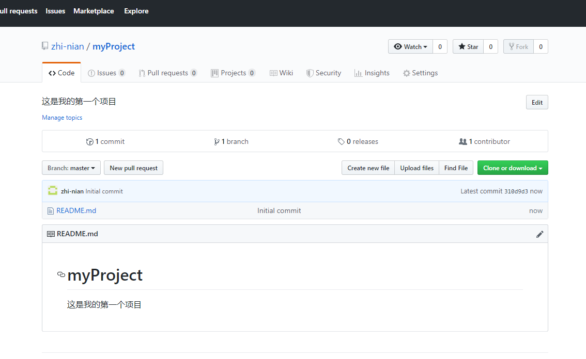

一、登录GitHub创建仓库 ，步骤如下：
1、点击新建
2、填写仓库名称等
3、创建完成

二、关联已有的本地项目（没有需要关联的本地项目，可以直接从刚刚创建的GitHub仓库clone）
1、到本地项目文件夹下用git命令行依次输入下面的两条命令
git initgit remote add origin https://github.com/zhi-nian/VuePractice.git
执行结果如下：PS E:\code> git init
Initialized empty Git repository in E:/code/.git/
PS E:\code> git remote add origin https://github.com/zhi-nian/VuePractice.git
三、上传自己的本地代码
1、编辑器报错
2、解决办法
切换到项目所在目录，在命令行窗口依次输入
git pull
git pull origin mastergit pull origin master --allow-unrelated-histories执行结果如下：PS E:\code> git pull
warning: no common commits
remote: Enumerating objects: 3, done.
remote: Counting objects: 100% (3/3), done.
remote: Total 3 (delta 0), reused 0 (delta 0), pack-reused 0
Unpacking objects: 100% (3/3), done.
From https://github.com/zhi-nian/VuePractice
* [new branch] master -> origin/master
There is no tracking information for the current branch.
Please specify which branch you want to merge with.
See git-pull(1) for details.
git pull <remote> <branch>
If you wish to set tracking information for this branch you can do so with:
git branch --set-upstream-to=origin/<branch> master
PS E:\code> git pull origin master
From https://github.com/zhi-nian/VuePractice
* branch master -> FETCH_HEAD
fatal: refusing to merge unrelated histories
PS E:\code> git pull origin master --allow-unrelated-histories
From https://github.com/zhi-nian/VuePractice
* branch master -> FETCH_HEAD
Merge made by the 'recursive' strategy.
README.md | 2 ++
1 file changed, 2 insertions(+)
create mode 100644 README.md
完事儿直接用编辑器重新提交代码 ok！
四、代码下拉
1、代码下拉遇到的问题
2、解决办法
切换到项目所在目录，在命令行窗口输入
git branch --set-upstream master origin/master 或 git branch --track master origin/master
执行结果如下：PS E:\code> git branch --set-upstream master origin/master
The --set-upstream flag is deprecated and will be removed. Consider using --track or --set-upstream-to
Branch master set up to track remote branch master from origin.这样就ok了 可以下拉更新了
五、删除仓库 步骤如下图
1、
2、
3、
4、完成